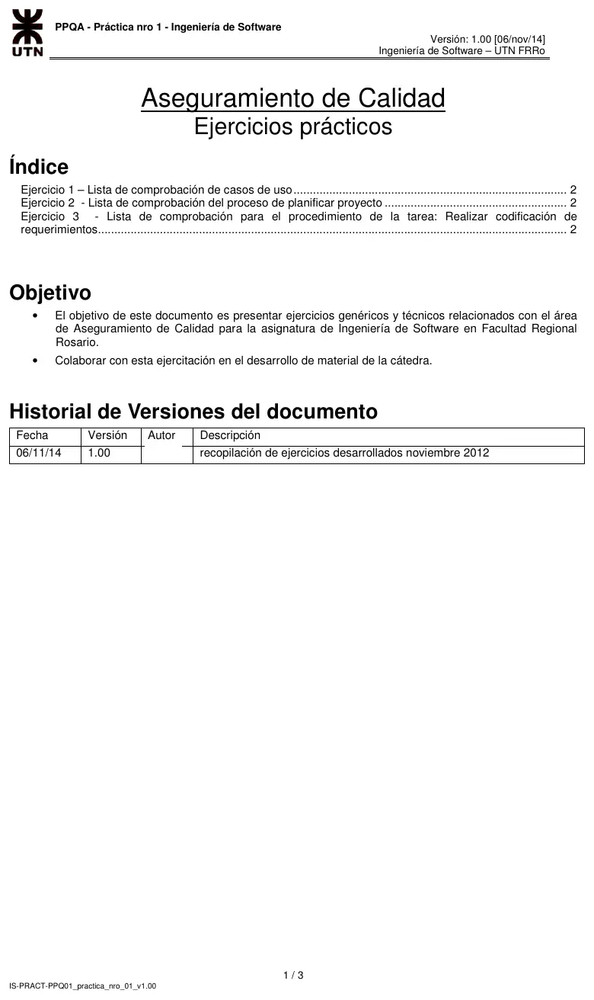
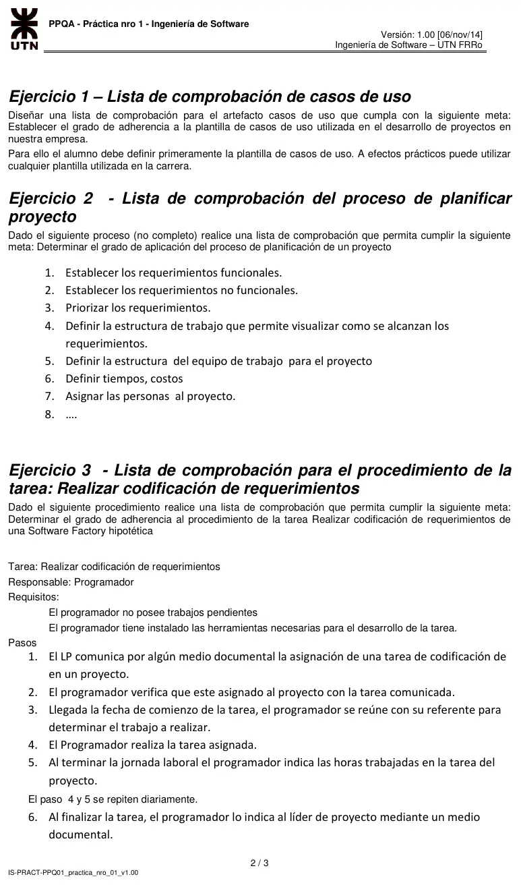
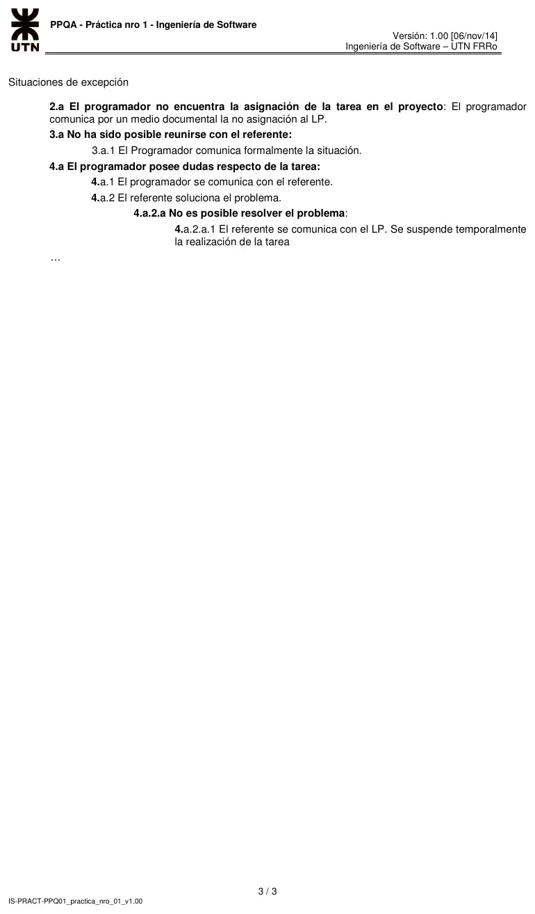

Práctica de la cátedra: listas de comprobación
Parcial de aprobación directa
Enunciado






Propuesta de respuesta
Respuesta no verificada. La propuso Luta Studios con inteligencia artificial y ningún docente la revisó. Puede tener errores.
Una lista de comprobación es lo que usa PPQA para evaluar objetivamente un producto de trabajo (SP 1.2) o un proceso (SP 1.1) contra su estándar. Cada pregunta se contesta Sí, No o No aplica, y cada No es una no conformidad que se registra y se sigue hasta su cierre (SP 2.1 y 2.2). Para que la lista cumpla la meta, se le suma un indicador, que es una métrica con su criterio de decisión.
es la cantidad de respuestas Sí, y la cantidad de preguntas que aplican. Los cortes de abajo son una propuesta y cada organización fija los suyos.
| Grado | Decisión |
|---|---|
| 90 o más | Adherente. Los No se corrigen sin frenar el trabajo |
| De 70 a menos de 90 | Adherencia parcial. Se corrige antes de pasar a la etapa siguiente |
| Menos de 70 | No adherente. Se rehace y se vuelve a evaluar |
Ejercicio 1, casos de uso
Plantilla. Se toma una plantilla común en la carrera.
| Sección | Qué lleva |
|---|---|
| Encabezado | Identificador, nombre y versión |
| Meta | Qué logra el actor al terminar |
| Actores | Principal y secundarios |
| Precondiciones | Lo que tiene que valer antes de empezar |
| Camino básico | Los pasos numerados del escenario sin problemas |
| Caminos alternativos | Las excepciones, numeradas según el paso donde salen. Si no hay, se escribe «<vacío>» |
| Postcondiciones | Lo que vale al terminar |
| Historial de versiones | Fecha, versión, descripción del cambio y responsable |
Lista. Se contesta una por caso de uso.
| N.º | Pregunta | Sí | No | No aplica |
|---|---|---|---|---|
| 1.1 | ¿Tiene identificador, nombre y versión, según la nomenclatura de la organización? | |||
| 1.2 | ¿Se ha expresado la meta? | |||
| 1.3 | ¿Están nombrados el actor principal y los secundarios? | |||
| 1.4 | ¿Están las precondiciones y las postcondiciones? | |||
| 1.5 | ¿El camino básico tiene sus pasos numerados, y cada paso es una acción del actor o del sistema? | |||
| 1.6 | ¿La sección de caminos alternativos tiene contenido, aunque sea «<vacío>»? | |||
| 1.7 | ¿Cada camino alternativo dice en qué paso sale y cómo termina? | |||
| 1.8 | ¿Están todas las secciones de la plantilla, en su orden? | |||
| 2.1 | ¿Cada línea del historial tiene fecha, versión y descripción del cambio? | |||
| 2.2 | ¿Cada línea del historial tiene responsable? | |||
| 2.3 | ¿La versión del encabezado es la última del historial? |
El grado se calcula por caso de uso y para el conjunto. También conviene contar los No por pregunta, porque muestran qué parte de la plantilla se cumple menos.
Ejercicio 2, proceso de planificar proyecto
La meta es el grado de aplicación del proceso. Por eso la lista pregunta si cada paso se hizo y si dejó su producto, no cómo quedó escrito.
| Paso | Pregunta | Sí | No | No aplica |
|---|---|---|---|---|
| 1 | ¿Están documentados los requerimientos funcionales? | |||
| 1 | ¿El cliente los revisó y los aceptó? | |||
| 2 | ¿Están documentados los requerimientos no funcionales? | |||
| 3 | ¿Cada requerimiento tiene una prioridad asignada? | |||
| 3 | ¿El criterio de prioridad está acordado con el cliente? | |||
| 4 | ¿Existe la estructura de trabajo, la EDT? | |||
| 4 | ¿Cada requerimiento aparece en algún elemento de la EDT? | |||
| 4 | ¿La EDT sigue el orden de las prioridades? | |||
| 5 | ¿Están definidos los roles del proyecto y sus responsabilidades? | |||
| 5 | ¿Están los roles del cliente que participan en el proyecto? | |||
| 6 | ¿Hay estimaciones de tiempo para cada elemento de la EDT? | |||
| 6 | ¿Hay estimación de costos? | |||
| 6 | ¿Está registrado el método de estimación? | |||
| 7 | ¿Cada rol tiene una persona asignada? | |||
| 7 | ¿Las personas asignadas tienen el conocimiento que pide su rol? |
Las preguntas del paso 4 en adelante siguen a PP SP 1.1, 1.4, 2.1, 2.4, 2.5 y 2.6. Como el proceso no está completo, la lista también queda abierta para los pasos que siguen.
Ejercicio 3, procedimiento Realizar codificación de requerimientos
Se arma una lista por tarea asignada. Pregunta por los requisitos, por cada paso y por cada excepción.
| Parte | Pregunta | Sí | No | No aplica |
|---|---|---|---|---|
| Requisitos | ¿El programador no tenía trabajos pendientes al recibir la tarea? | |||
| Requisitos | ¿Tenía instaladas las herramientas necesarias? | |||
| Paso 1 | ¿El LP comunicó la asignación por un medio documental? | |||
| Paso 2 | ¿Consta que el programador verificó que está asignado al proyecto con esa tarea? | |||
| Paso 3 | ¿El programador se reunió con su referente en la fecha de comienzo? | |||
| Paso 3 | ¿Quedó registrado el trabajo a realizar? | |||
| Paso 4 | ¿Lo codificado corresponde a la tarea asignada? | |||
| Paso 5 | ¿Hay horas cargadas en la tarea en cada jornada trabajada? | |||
| Paso 6 | ¿El programador informó el fin de la tarea al LP por un medio documental? | |||
| Excepción 2.a | Si no encontró la asignación, ¿la comunicó al LP por un medio documental? | |||
| Excepción 3.a | Si no pudo reunirse con el referente, ¿lo comunicó formalmente? | |||
| Excepción 4.a | Si tuvo dudas, ¿las consultó con el referente? | |||
| Excepción 4.a.2.a | Si el referente no resolvió el problema, ¿se comunicó con el LP y se suspendió la tarea? |
Las preguntas de las excepciones van con No aplica cuando la excepción no ocurrió. Así no bajan el grado de una tarea que salió sin problemas.
Respuesta no verificada. Puede tener errores.
Se armó con la página Aprobación directa, secciones Aseguramiento de la calidad PPQA y Métrica, medida e indicador, y Casos de uso de Regularización.
Quedó en duda: La plantilla de casos de uso es una de las comunes en la carrera, porque el enunciado deja elegir. Los cortes de 90 y 70 del indicador son una propuesta.
¿Cómo te fue?
Marcá cada tema del examen.
- PPQAAseguramiento de la calidad PPQA, en Aprobación directa